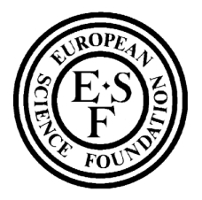

Geometric, Probabilistic, and Variational Methods in Dynamical Systems
supported by the PRODYN program of the European Science Foundation and
SISSA, the International School for Advanced Studies in Trieste
11th February to 1st of March 2002
The school will take place at the International School for Advanced Studies in Trieste (SISSA). It will consist of 4 main courses and additional seminars and talks by invited speakers. The courses are:
Ugo Bessi (Rome): "Hamiltonian dynamics and Mather theory"
Carlangelo Liverani (Rome): "Uniformly Hyperbolic Dynamics"
Stefano Luzzatto (Imperial College, London): "Nonuniformly Hyperbolic Dynamics"
Marcelo Viana (IMPA, Rio de Janeiro and College de France, Paris): "Partially Hyperbolic Dynamics"
Moreover, an introductory course on the basic topics and problems of the modern theory of Dynamical Systems will be delivered by C. Liverani from 14 to 25 January 2002 at SISSA.
The seminars speakers will be: D.Bambusi (Milano), G.Benettin (Padova), M.Berti (Sissa), C.Chierchia (Roma), J.Cresson (Besancon), P.Collett (Paris), H.Eliasson (Paris), A.Giorgilli (Milano).
The School is supported by the European Science Foundation PRODYN programme (http://www.prodyn.org) and by SISSA (http://www.sissa.it).